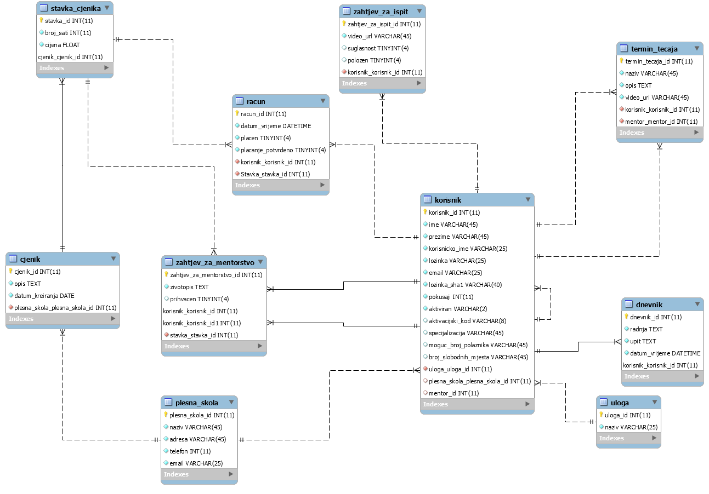
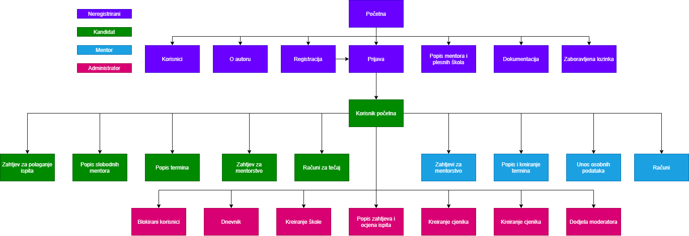

Opis projektnog zadatka
Projektni zadatak bio je izraditi Sustav za upravljanje upisom plesa i polaganje ispita nakon uspješnog završetka plesne škole.
Sustavom se koriste četiri tipa korisnika, neregistrirani, registrirani, mentor i administrator.
Neregistrirani korisnik može pregledavati plesne škole, broj njihovih polaznika te mentore. Registracijom mogu postati registrirani korisnici te tada
imaju mogućnost slanja zahtjeva za mentorstvo, pregledavanje termina tečaja plesa, polaganje ispita te pregled računa.
Mentor uz sve već navedene mogućnosti ima mogućnost kreiranja termina, kreiranja računa te pregledavanje statistike.
Administrator ima sve mogućnosti kao i neregistrirani, registrirani ili mentor te ima uvid u kompletne podatke na sustavu kojega može još dodatno podešavati.
Opis projektnog rješenja
Cijeli sustav temelji se na HTML-u, CSS-u, JavaScriptu te PHP-u. Sam frontend realiziran je korištenjem HTML-a, CSS-a te nešto malo Javascripta, dok se backend temelji na PHP-u i JavaScriptu.
Sustav koristi MySql bazu podataka pohranjenu na barka.foi.hr serveru.
Sam sustav je koncipiran na način da kreira sesiju prilikom prijave, kako bi se utvrdila razina pristupa koju taj korisnik ima, time sprječavajući da korisnik ode na dio sustava koji nije
namijenjen njemu. Neregistrirani korisnik je korisnik koji nema korisnički račun u sustavu. Članom sustava postaje registracijom u sustav pri čemu unosi ime, prezime, korisničko ime te lozinku.
Neregistrirani korisnik ima mogućnost pregledavanja plesnih škola te broj njihovih polaznika. Također može pregledavati mentore te ih pretraživati prema ključnim riječima.
Registrirani korisnik je korisnik koji ima kreiran i aktiviran korisnički račun unutar sustava. Registrirani korisnik ima sve mogućnosti kao i neregistrirani korisnik uz nekoliko dodatnih mogućnosti.
Kod prijave u sustavu unosi se korisničko ime i lozinka. Ukoliko se korisnik 3 puta neuspješno pokuša prijaviti korisnički račun se zaključava te se onemogućava prijava u sustav. Korisnički račun može
otključati samo administrator sustava.
Registrirani korisnik ima mogućnost kreiranja zahtjeva za mentorstvo pri čemu odabire mentora, cjenik te prilaže svoj životopis.
Nakon kreiranja zahtjeva, isti može biti prihvaćen ili odbijen od strane mentora. Registrirani korisnik ima uvid u termine koje kreira njegov mentor.
Moderator je registrirani korisnik koji ima sve mogućnosti ranije definiranih uloga uz dodatak nekoliko dodatnih.
Prilikom zaprimanja zahtjeva za mentorstvo moderator taj zahtjev prihvaća ili odbija. Ukoliko ga prihvati, podnositelj zahtjeva postaje član mentorove plesne škole.
Moderator ima uvid u izdane račune te su vidi podatke o plaćenim i neplaćenim računima. Moderator ima i uvid u termine koje može kreirati za svoje polaznike, pri čemu upisuje opis te prilaže video.
Administrator, uz sve već navedeno, ima mogućnost kreiranja, ažuriranja i brisanja plesnih škola, cjenika i zahtjeva za ispit. Administrator također može dodijeliti mentorstvo korisniku. Pregledava
dnevnik sustava u kojem su zapisane sve radnje koje je neki korisnik radio na stranici.
ERA model

index.php
Početna stranica projektnog rješenja.
blokirani_racuni.php
Stranica kojoj može pristupiti samo administrator, sadrži popis blokiranih korisnika te forme za blokiranje ili otključavanje korisničkog računa.
cjenik.php
Stranica kojoj može pristupiti samo administrator, sadrži popis cjenika te njegovih stavaka. administrator ima CRUD mogućnosti.
dnevnik.php
Stranica kojoj može pristupiti samo administrator, sadrži popis radnji u sustavu. Administrator može pretraživati podatke prema ključnim riječima.
kreiranje_kategorija.php
Stranica kojoj može pristupiti samo administrator, sadrži popis plesnih škola. Administrator ima CRUD mogućnosti.
kreiranje_moderatora.php
Stranica kojoj može pristupiti samo administrator, sadrži popis moderatora. Administrator može dodijeliti status moderatora.
kreiranje_zahtjeva.php
Stranica kojoj može pristupiti samo administrator, sadrži popis zahtjeva za ispit. Administrator ima CRUD mogućnost te daje prolaz ili pad na ispitu.
tablica_blokirani.php
Skripta koja se koristi za popunjavanje podataka u tablici u stranici blokirani_računi.
tablica_cjenik.php
Skripta koja se koristi za popunjavanje podataka u tablici u stranici cjenik.
tablica_dnevnik.php
Skripta koja se koristi za popunjavanje podataka u tablici u stranici dnevnik.
tablica_kategorije.php
Skripta koja se koristi za popunjavanje podataka u tablici u stranici kreiranje_kategorije.
tablica_mmoderator.php
Skripta koja se koristi za popunjavanje podataka u tablici u stranici kreiranje_moderatora.
tablica_zahtjevi.php
Skripta koja se koristi za popunjavanje podataka u tablici u stranici kreiranje_zahtjeva.
kreiranje_termina.php
Stranica kojoj mogu pristupiti mentor i administrator. Služi za pregled i kreiranje termina za njihovog polaznika.
popis_racuna.php
Stranica kojoj mogu pristupiti mentor i administrator. Služi za pregled i kreiranje računa za njihovog polaznika te potvrđivanje plaćanja.
popis_zahtjeva.php
Stranica kojoj mogu pristupiti mentor i administrator. Služi za pregled i potvrdu ili odbitak primmljennih zahtjeva za mentorstvo.
unos_podataka.php
Stranica kojoj mogu pristupiti mentor i administrator. Služi za unos podataka o sebi.
aktivacija.php
Skripta za aktivaciju korisničkog računa.
plesneskole.php
Stranica kojoj mogu pristupiti neregistrirani, registrirani, mentor i administrator. Sadrži popis škola s brojem njihovih polaznika te popis mentora.
prijava.php
Stranica kojoj mogu pristupiti neregistrirani, registrirani, mentor i administrator. Služi za prijavu u sustav.
registracija.php
Stranica kojoj mogu pristupiti neregistrirani, registrirani, mentor i administrator. Služi za registraciju u sustav.
username_provjera.php
Skripta za provjeru zauzetosti korisničkog imena u stranici registracija_php.
zaboravljenalozinka.php
Skripta za slanje novogenerirane lozinke na mail.
mentori.php
Stranica kojoj mogu pristupiti registrirani, mentor i administrator. Služi za pregled slobodnih mentora.
racuni.php
Stranica kojoj mogu pristupiti registrirani, mentor i administrator. Služi za pregled korisnikovih računa.
zahtjev_mentorstvo.php
Stranica kojoj mogu pristupiti registrirani, mentor i administrator. Služi za pregled zahtjeva za mentorstvo i njihovo slanje.
zahtjev_za_ispit.php
Stranica kojoj mogu pristupiti registrirani, mentor i administrator. Služi za pregled zahtjeva za ispit i njihovo slanje.
nav.php
Skripta za prikaz veza na stranice, ovisno o korisnikovoj razini pristupa.
navpocetna.php
Skripta za prikaz veza na stranice, ovisno o korisnikovoj razini pristupa. Odnosi se na index.php.
Navigacijski dijagram

Korištene tehnologije
- HTML - za realizaciju frontend dijela
- CSS - za realizaciju frontend dijela
- JavaScript - za realizaciju frontend i backend dijela
- PHP - za realizaciju backend dijela
- MySql - za realizaciju baze podataka
- jQuery - za realizaciju backend dijela
- Ajax - za realizaciju backend dijela
Korišteni alati
- MySql Workbench - za razvoj baze podataka
- Netbeans IDE - za razvoj web stranice
Vanjske datoteke
- baza.php - komunikacija s bazom podataka
- sesija.php - skripta za kreiranje korisnničke sesije
- https://www.google.com/recaptcha/api.js - za realizaciju CAPTCHe
- https://ajax.googleapis.com/ajax/libs/jquery/3.4.1/jquery.min.js - za realizaciju jQuery funkcionalnosti
- dataTable - za realizaciju pretraživanja i sortiranja